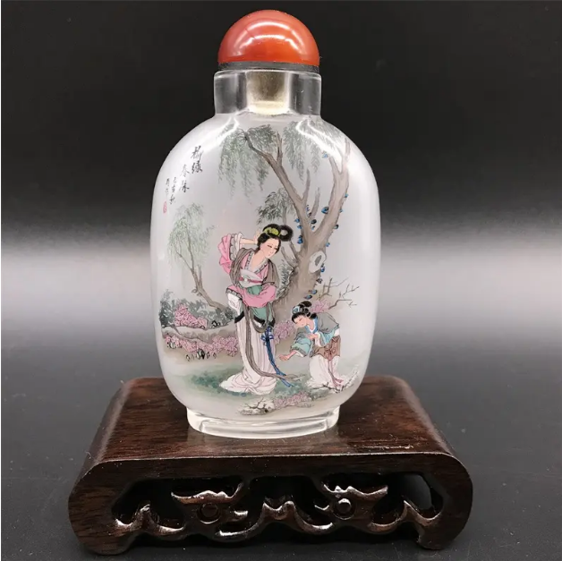

丝绸 淄博丝绸源远流长，闻名遐迩，周村素有“丝绸之乡”的美誉，曾对开辟“丝绸之路”，开展对外贸易发挥了重要作用，在历史上留下了浓重的一笔。据史料记载，早在春秋战国时期我国就有家庭丝织手工业，明朝万历年间，周村丝绸业有了较大发展。清代末期有了机械化生产的雏形。
新中国成立之后，淄博丝绸工业得到迅速发展，形成了蚕桑生产、操丝、桑丝、丝织，印染、丝绸机械、生丝检验、内外贸易等较完整的行业体系。淄博丝绸以出口中高档真丝产品为主，产品多为提花、色织、轻薄等工艺较复杂织物，产品档次高，现已远销欧、美，东南亚等30多个国家和地区。
刻瓷 淄博刻瓷是集绘画、书法、刻镂于一身，集笔、墨、色、刀为一体的手工艺术珍品。本世纪80年代初开始名扬中外。前来拜访学艺的人络绎不绝。刻瓷艺术传入淄博后，在各大陶瓷厂家迅速展开研制，并先后建立刻瓷组织。一批资深陶瓷艺术家，如张明文、冯乃江、朱一圭等，领衔开拓这一新领域。他们带领年轻一代，在继承淄博陶瓷传统技艺的基础上，研究地域瓷质和釉面色彩特性，改进刀具和装饰技法，研究出了堆雕与刻凿结合、喷花绘画与刻凿结合诸方面的新工艺。在表现手法上，他们也进行了创新，多以平口刀捻、转、平、侧等刀法，使点、线、面巧妙结合，搭配得当。并将中国画、篆刻及西方油画的技艺融入刻瓷之中。使刻出的作品，不但具有书画神形，而且颇有浓郁的宝石韵味。他们还研制出了宝石瓷堆釉刻瓷，喷堆刻来，就把淄博的刻瓷工艺推向了一个新阶段，使之在全国乃至世界范围内自成一派，独树一帜。
内画鼻烟壶 内画鼻烟壶是中国特色传统手工艺品。60年代，内画艺术有北京的京派，山东的鲁派，广东的姚江派等三大流派。北京派的艺人用竹笔、柳木笔作画，以画面厚朴、古雅见长；山东派用毫毛笔作画，以画面纤巧、点击此处添加图片说明艳丽取胜，王习三在继承北京明、清著名老艺人叶仲三技法的基础上，融合内画名家流派之特长，形成了自己的独特风格，在国际上被誉为冀派。高超的技艺水平和不朽的艺术价值，充分体现了古代中国劳动人民的卓越才能和和艺术创造力。博山能制造鼻烟壶约在光绪十六年（1890年）。用特制的弯竹笔，伸进口小如豆的壶内用反手在壶壁上画出奇妙莫测的人物、山水、禽兽、花卉等。壶形有扁、圆、方．长、梯、棱、椭等，用料有玉石、翡翠、玛瑙、水晶、象牙、瓷料等。博山鼻烟壶对我国内画工艺的发展有重要贡献。

陶瓷 陶与瓷的质地不同，性质各异。陶，是以粘性较高、可塑性较强的粘土为主要原料制成的，不透明、有细微气孔和微弱的吸水性，击之声浊。瓷是以粘土、长石和石英制成，半透明，不吸水、抗腐蚀，胎质坚硬紧密，叩之声脆。历史悠久，驰名中外。淄博系中国五大陶瓷生产地之一，有北方瓷都之城，中华龙国宴瓷，填补了日用陶瓷市场的一片空白，先后进入了中南海、人民大会堂、钓鱼台国宾馆，被誉为第三代国宴用瓷。